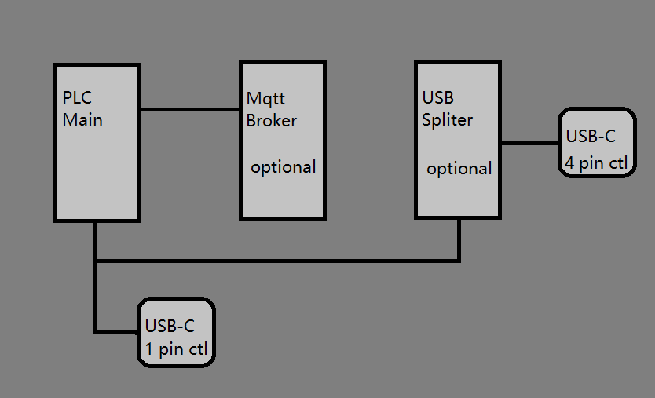
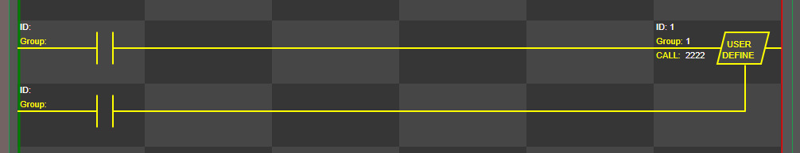

Job completed in 2023
(1) Software and hardware design is basically completed.

(2) Adopting the web application to edit ladder programs and work online or offline. Web pages are stored on the Internet and in the MCU.
(3) Adopting feasible module design, users can configure the combination by themselves.
January 2024
(1) Hardware testing enters its final stages, adopting a modular approach and incorporating third-party equipment.
(2) Solve the problem of multi-module I/O address mapping.
(3) Add online real time clock timer.
Feberuary 2024
(1) Add embedded c language between ladder diagram devices
(2) Add control for servo and stepper motors
(3) Test the new hardware
March 2024
(1) Testing new hardware with modular design, using wired and wireless protocols for links to third-party I/O cards.
(2) Synchronously hardware update the website and help menu
Add 4 pin control, for user program use C language

The 4 pin option can use for special control, such as servo and stepper motor.

One of my goals for this month is user define subroutine, the ladder out through splitter MCU.
The splitter MCUs can drive many different types of devices using built-in C calls or using programs. Triggered by a ladder program, it supports four signal outputs, and the signal lines include SPI I2C Uart or GPIO.